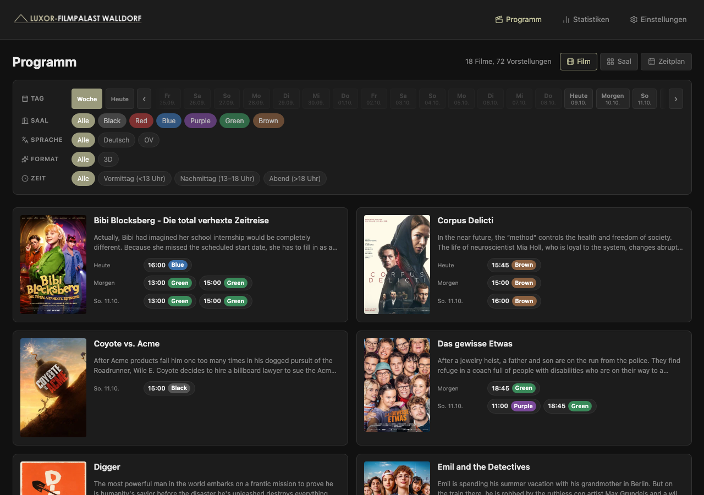
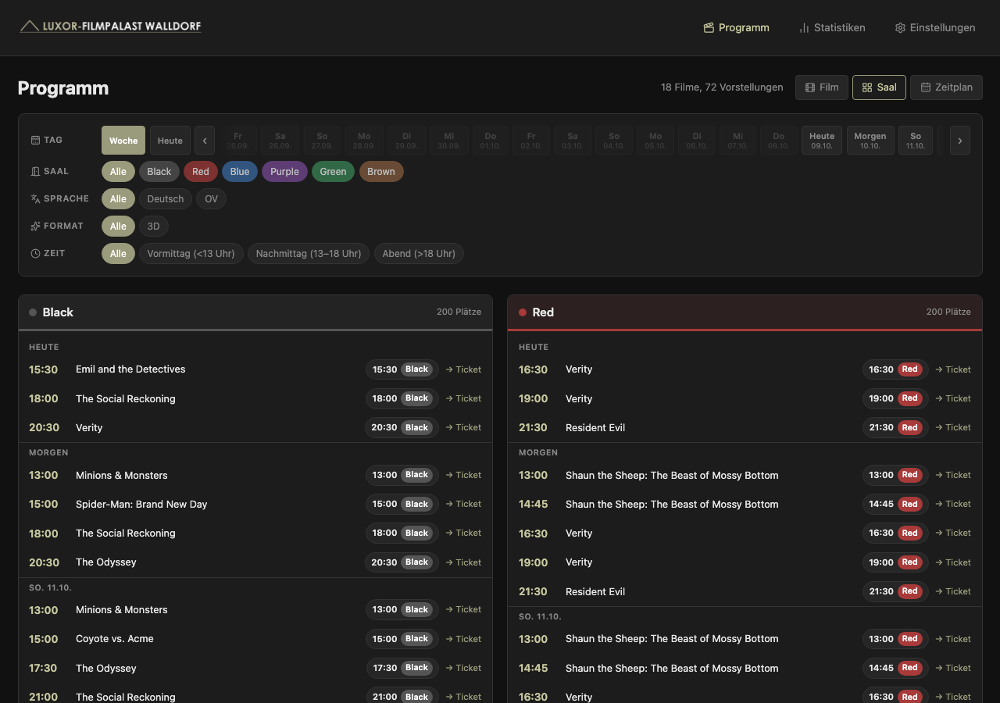
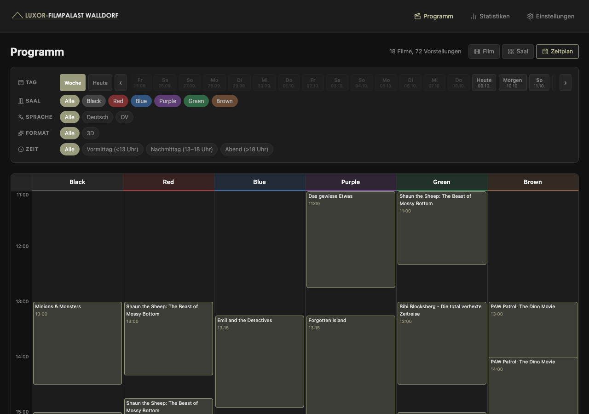

Selbst gehosteter Spielplan-Viewer für jedes Cineamo-Kino. Die ganze Woche auf einen Blick, filterbar nach Saal und Format, mit Benachrichtigungen wenn ein Film neue Vorstellungen bekommt.

Ansichten
Per Klick im Header zwischen Ansichten wechseln, jede ist für einen anderen Anwendungsfall optimiert.
Eine Karte pro Film: Poster, Laufzeit, Altersfreigabe und alle Vorstellungen mit Saal- und Sprachangaben. Klick auf eine Karte öffnet die Detailseite.

Der Spielplan nach Saal gruppiert. Jede Sektion zeigt das farbcodierte Saallabel und alle dort laufenden Filme des Tages.

Ein pixelgenauer Zeitstrahl über alle Säle gleichzeitig. Lücken, Überschneidungen und den Tagesrhythmus auf einen Blick erfassen.
Funktionen
Jeder Film verlinkt direkt auf seinen Trailer und zeigt Besetzung, Originaltitel und Synopsis aus TMDB.
Nach Tag, Saal, Sprache (OV / OmU), Format (3D, Dolby usw.) oder Tageszeit filtern. Filter kombinieren sich und bleiben beim Navigieren erhalten.
Film- und saalübergreifende Auswertungen über die gespeicherte Historie: Laufzeit, Vorstellungsanzahl, stärkste Tage.
Einen Film beobachten. Sobald neue Vorstellungen erscheinen, kommt eine Push-Nachricht oder ein Webhook an ntfy, Gotify, Slack oder eine beliebige URL.
Installation
Benötigt Docker. Getestet auf Linux, macOS und Windows (WSL2).
services: showtimes: image: ghcr.io/syntaxxhd/showtimes:latest ports: - '3000:3000' volumes: - showtimes-data:/app/data environment: CINEMA_ID: 1045 DB_PATH: /app/data/showtimes.db volumes: showtimes-data:
docker compose up -d
http://localhost:3000 öffnen, der Spielplan wird automatisch geladen. Die SQLite-Datenbank liegt in einem Named Volume und bleibt bei Container-Neustarts erhalten.
CINEMA_ID: 1045 ist der Standard (Luxor-Filmpalast Walldorf). Für ein anderes Kino einfach den Wert in der Compose-Datei ändern.
Das eigene Kino findet man in der /settings-Seite der laufenden App, per Name suchen und mit einem Klick übernehmen.
Wer sein Kino nicht über die Suche findet: In den Netzwerkaufrufen der Cineamo-App oder der Kino-Website taucht die ID als cinemaId=XXXX in der URL oder API-Response auf.
Unter Einstellungen > Film-Benachrichtigungen einen kostenlosen Lese-Token von themoviedb.org hinterlegen, dann Filme suchen und beobachten.
Benachrichtigungen kommen per Browser-Push oder an eine Webhook-URL (ntfy.sh, Gotify, Slack). Auf iOS muss die Seite als PWA zum Home-Bildschirm hinzugefügt werden.